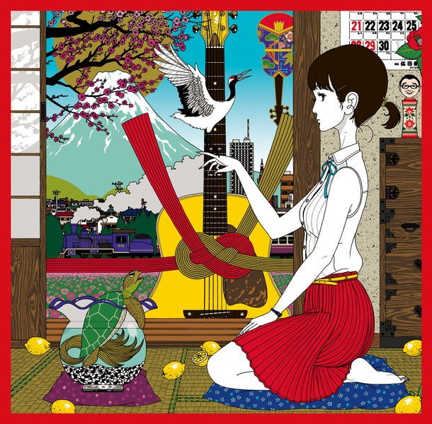
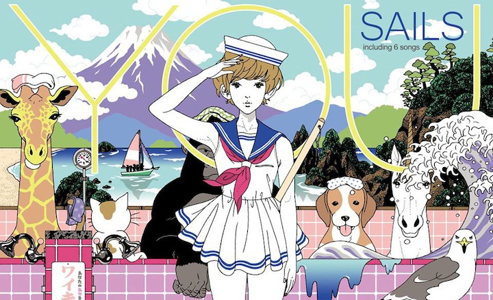
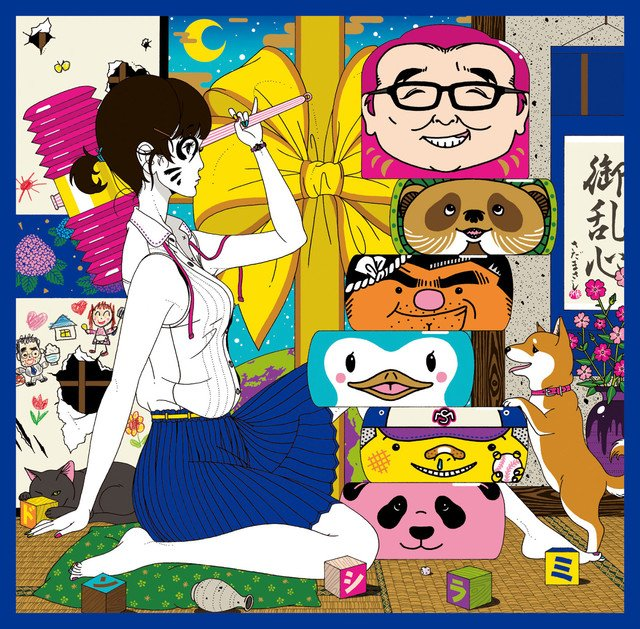

Yūsuke Nakamura (b.1978; Hyōgo, Japan) is a professional artist, illustrator and character designer, and is best-known for his CD jacket illustrations for the Japanese alternative rock group,
Asian Kung-Fu Generation. His art has been featured on a vast array of media, ranging from character designs in anime projects to textbook covers. Outside of art, he serves as the frontman for the indie band, Sails, makes appearances on television and radio programs, and pens essays on several topics. His first published art book, Blue, exceeded a milestone of 95,000 copies sold.
—Translation by Kevin Kwok
Sample Works



×